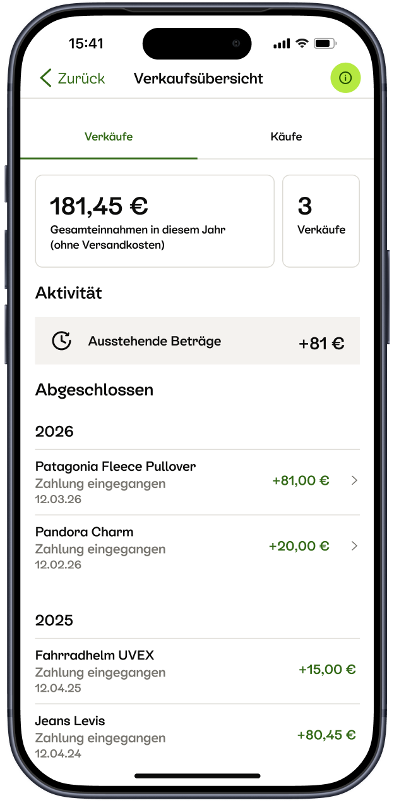

Transactions overview page
Users can view all their transactions in one centralized location.

A central place for buyers and sellers to track their transactions.
A transaction overview page for Kleinanzeigen's C2C payment experience, showing ongoing and past transactions in one clear interface. The goal: give buyers and sellers a single place to track what's happening with their transactions, without having to dig through individual conversations to find out.
The overview should help people find the transaction they need without having to reconstruct its status from scattered messages or steps.
Before this, there was no dedicated place for users to see the status of their transactions. Buyers and sellers had to navigate to individual chats to find out where things stood - which worked for a single transaction but broke down fast for anyone managing more than one at a time. For sellers especially, tracking multiple ongoing sales meant constant context-switching with no at-a-glance view of what needed attention.
On top of the UX gap, DAC7 - the EU regulation requiring platforms to report seller income - introduced a new compliance requirement: sellers needed a structured, accessible record of their transaction activity.
Make the most important information easy to scan, then provide a clear path to details when someone needs them. Buyer and seller views can share the same transaction context while highlighting the actions relevant to each person.
I designed the transaction overview experience end to end, including structure, status visibility, and the overall information hierarchy for both buyers and sellers.
I focused on creating a clear, structured overview that makes it easy for users to understand the status of their transactions at a glance. This involved designing a layout that prioritizes the most important information and provides easy access to detailed views when needed.
The overview was new to most users but received strongly positively - particularly by high-volume and PRO sellers who had previously managed everything through a cluttered message inbox. For that group, a structured, table-based view with clear statuses, prices, and dates was a significant upgrade.
DAC7 compliance was a genuine user need, not just a regulatory checkbox. Sellers actively used the overview to monitor how close they were to the reporting threshold, and the absence of a sales counter and pending amounts in the summary created real anxiety - users couldn't easily tell how much they could still sell before hitting the limit.
The clearest point of confusion: users who hadn't used Kleinanzeigen's integrated payment feature expected the overview to show their entire sales history on the platform, not just in-app transactions. The scope mismatch caused disorientation and unmet expectations around completeness.
The research findings directly influenced the design priorities: surfacing pending amounts alongside completed totals, adding a sales counter tied to the DAC7 30-item threshold, and structuring the page to make the scope of what's included (in-app transactions only) immediately clear, rather than leaving users to discover that limitation after the fact.
The buyer purchases overview and the wallet concept, making earnings immediately visible at the moment of payment rather than abstract and deferred, were identified as the natural next layer, and the architecture of this page was designed to support both.
The transaction overview page was successfully implemented, providing users with a centralized location to track their transactions. Feedback from users indicated that the new interface significantly improved their ability to manage multiple transactions and understand their status without having to navigate through individual chats.
Additionally, the overview page helped sellers comply with DAC7 regulations by providing a clear record of their transaction activity, which was well-received by both users and regulatory bodies.